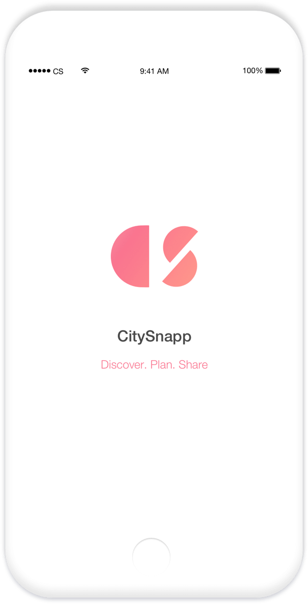
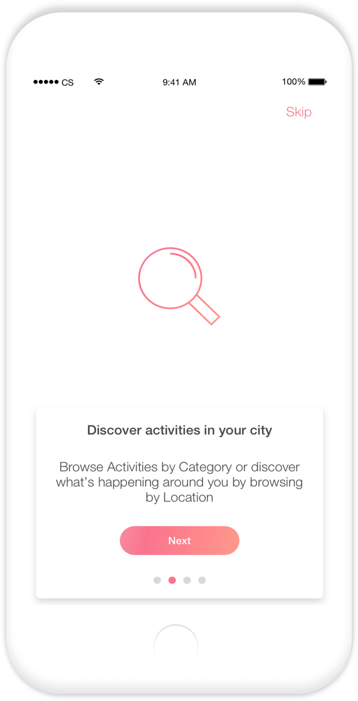
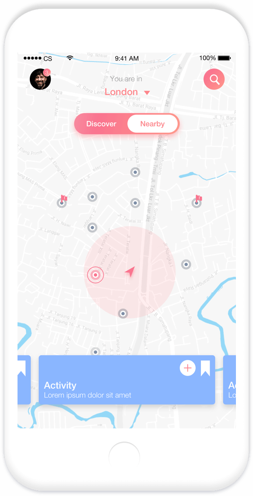
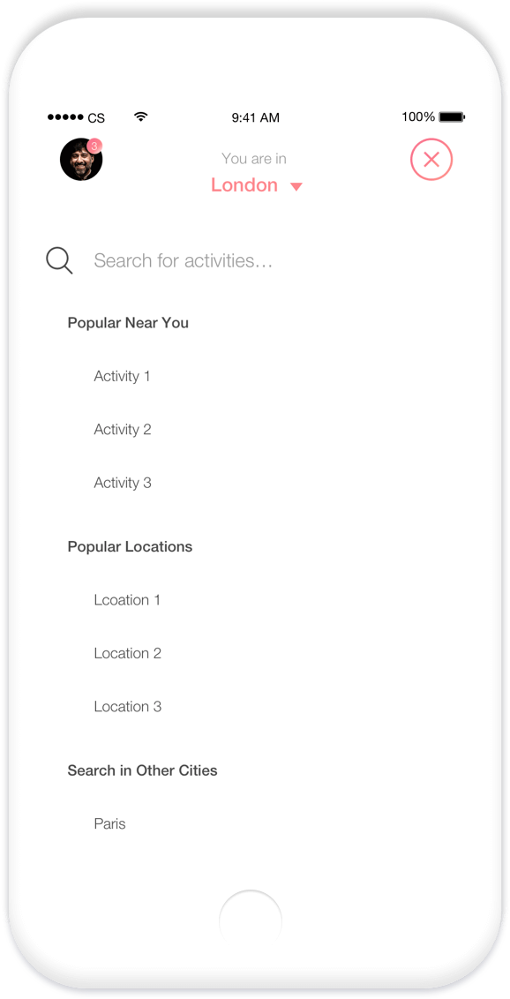
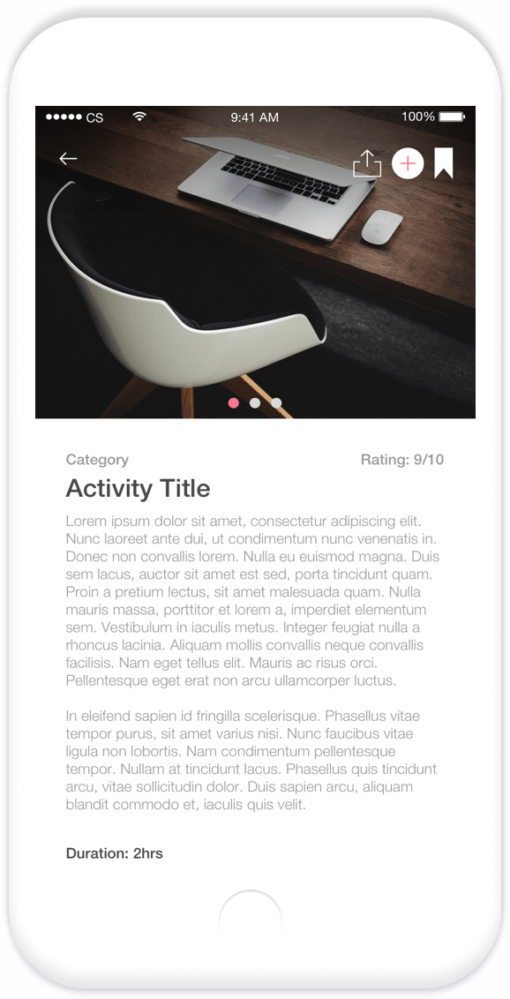
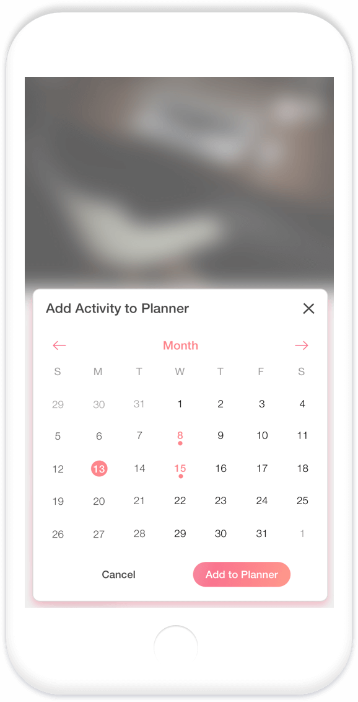
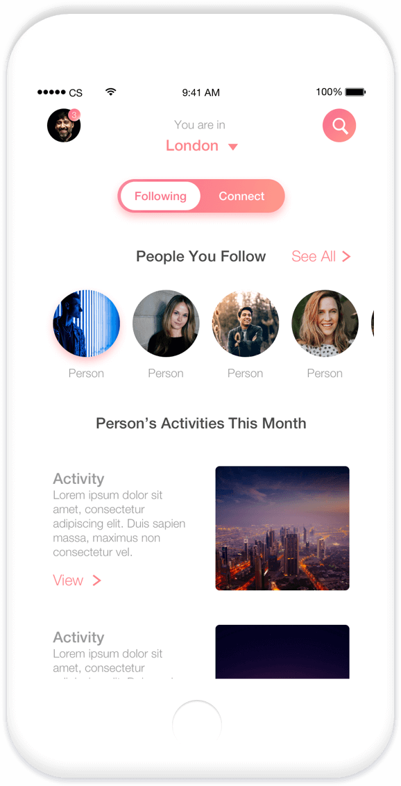
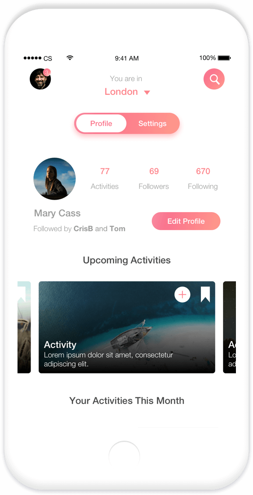

<!DOCTYPE html><html class="no-js" lang="en"><head><meta charset="utf-8"><title></title><meta name="description"><meta name="author" content="Aran Bruce-Caddick"><link rel="canonical" href="https://www.aranbc.com/"><meta name="viewport" content="width=device-width, initial-scale=1"><script type="text/javascript">(function(i,s,o,g,r,a,m){i['GoogleAnalyticsObject']=r;i[r]=i[r]||function(){
(i[r].q=i[r].q||[]).push(arguments)},i[r].l=1*new Date();a=s.createElement(o),
m=s.getElementsByTagName(o)[0];a.async=1;a.src=g;m.parentNode.insertBefore(a,m)
})(window,document,'script','https://www.google-analytics.com/analytics.js','ga');
ga('create', 'UA-113169728-1', 'auto');
ga('send', 'pageview');
</script><link rel="stylesheet" href="css/styles.bundle.css"><link rel="icon" href="favicon.png" type="image/x-icon"><link rel="shortcut icon" href="favicon.png" type="image/x-icon"><meta name="apple-mobile-web-app-capable" content="yes"><meta name="apple-mobile-web-app-status-bar-style" content="white"><meta name="apple-mobile-web-app-title" content="Aran Bruce-Caddick"><link rel="apple-touch-icon" href="images/apple-touch-icon.png"><link rel="apple-touch-startup-image" href="images/splash-launch-640x1136.png" media="(device-width: 320px) and (device-height: 568px) and (-webkit-device-pixel-ratio: 2) and (orientation: portrait)"><link rel="apple-touch-startup-image" href="images/splash-launch-750x1294.png" media="(device-width: 375px) and (device-height: 667px) and (-webkit-device-pixel-ratio: 2) and (orientation: portrait)"><link rel="apple-touch-startup-image" href="images/splash-launch-1242x2148.png" media="(device-width: 414px) and (device-height: 736px) and (-webkit-device-pixel-ratio: 3) and (orientation: portrait)"><link rel="apple-touch-startup-image" href="images/splash-launch-1125x2436.png" media="(device-width: 375px) and (device-height: 812px) and (-webkit-device-pixel-ratio: 3) and (orientation: portrait)"><link rel="apple-touch-startup-image" href="images/splash-launch-1536x2048.png" media="(min-device-width: 768px) and (max-device-width: 1024px) and (-webkit-min-device-pixel-ratio: 2) and (orientation: portrait)"><link rel="apple-touch-startup-image" href="images/splash-launch-1668x2224.png" media="(min-device-width: 834px) and (max-device-width: 834px) and (-webkit-min-device-pixel-ratio: 2) and (orientation: portrait)"><link rel="apple-touch-startup-image" href="images/splash-launch-2048x2732.png" media="(min-device-width: 1024px) and (max-device-width: 1024px) and (-webkit-min-device-pixel-ratio: 2) and (orientation: portrait)"><link rel="manifest" href="manifest.json"><meta name="theme-color" content="#317EFB"></head></html><body id="body"><nav><div class="navContent"><div class="leftNav"><a href="/"></a></div><div class="rightNavNoPadding"><div class="closeButton" id="close" onclick="window.location.href='../#projects'"><div class="allXBars"><div class="xbar1"></div><div class="xbar2"></div><div class="xbar3"></div></div></div></div></div></nav><section><div class="sectionContent flexParent"><div class="leftSection"><h5>Designing a Native App</h5><h1>CitySnapp</h1><h5>- 01</h5><h2>Background</h2><p>CitySnapp is a free Android, iOS and web-based app designed to help people easily plan activities in their local area. Going beyond pure discovery, it also doubles as a personal planner and social network to help people see what their friends and influencers have also been up to.</p><p>The app allows users to browse activities, either by category or location. Then, once they've found something they like, they can save it for later, put it straight in their planner, or share it with their friends.</p></div><div class="rightSection"></div></div></section><section class="grayBackground"><div class="sectionContent"><h5>- 02</h5><h2>Onboarding</h2><div class="threeImages"></div></div></section><section><div class="sectionContent"><h5>- 03</h5><h2>Discovering Activities</h2><div class="threeImages"></div></div></section><section class="grayBackground"><div class="sectionContent"><h5>- 04</h5><h2>Planning</h2><div class="threeImages"></div></div></section><section><div class="sectionContent"><h5>- 05</h5><h2>Sharing</h2><div class="threeImages"></div></div></section><footer><div class="footerContent"><h5 id="footerTitle">Contact Details</h5><p><a href="mailto:aran.brucecaddick@gmail.com?Subject=Hello" target="_top">aran.brucecaddick@gmail.com</a></p><p><a href="https://www.linkedin.com/in/aran-bruce-caddick-a67b6790/" target="_blank" rel="noopener">LinkedIn</a></p><p><a href="https://www.github.com/aranbruce" target="_blank" rel="noopener">Github</a></p></div></footer><script src="scripts/scripts.bundle.js"></script><script src="scripts/swRegister.js"></script></body>